Mapping Indigenous data across Canada
A web solution using Ersi Configurable apps to map Indigenous data that is severely underrepresented
Step by step of how we did this!
ArcGIS Pro
Found language data from Statistics Canada reviewed the data and fixed all of ontario becasue most of the languages were marked as "undetermined which is not the case. From here we made a map in ArcGIS Pro then uploaded it right into ArcGIS Online then finalized the web map to embed into Dashboards.
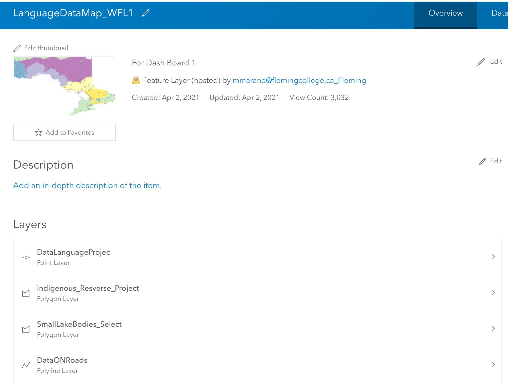Learning Outcomes
While finding data to use, we found that a lot of data we wanted to use was already on ArcGIS Online. The road block we had to over come was downloading the maps from Arc Online to ArcGISPro to later relize the data was in a REST end point. Always invegigate you data before you download or you could spend hours trying to figure out why you can preform analysis or data manipulate. We learned to always scroll down in Arc Online and invegiate further.
Limitations we found
Since Rest end point data can not be altered, we had to figure out how to fit the data into our project in a way that made sense. We could only preform spatial analysis which we did in ArcOnline to try and made sense of the data. We had to do this becasue the data we needed is exteremly hard to come by
Dashboards
We were able to articulate our data on Indigenous Communities in Canada using ArcGIS Dashboards by combining location-based analytics and a number of data visualizations on a single computer. Creating a dashboard enabled us to display a map alongside graphs, charts, lists, and text to give our solution a visual and geospatial dimension. We began by adding the maps we generated in ArcGIS Pro, as well as the required elements to communicate our results, to the Dashboards. Pie maps, serial charts, gauges, tables, and text were among the components included. A total of two dashboards were built. One was on a comparison of Indigenous Populations with Residential Schools from 1823 to 2016. This dashboard will be used to see how demographic trends in Canada are linked to the start and end dates of residential schools. The Dashboard on Languages Spoken in Canada was also developed. The Indigenous languages spoken in Ontario can be communicated using this Dashboard.
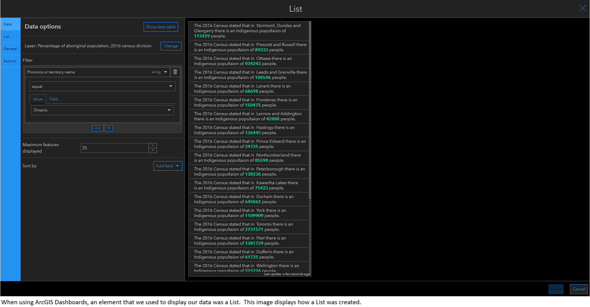 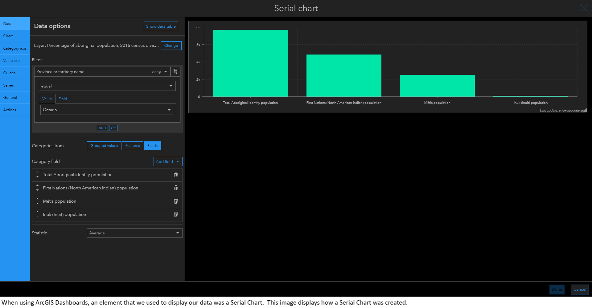Learning Outcomes
When we used Dashboards, we discovered that we could add a lot of different details to display our results. Dashboards are easy to access and use. Overall, using Dashboards to view Indigenous data in Canada is a valuable method because it helps you to display a large amount of data in an easy-to-understand format.
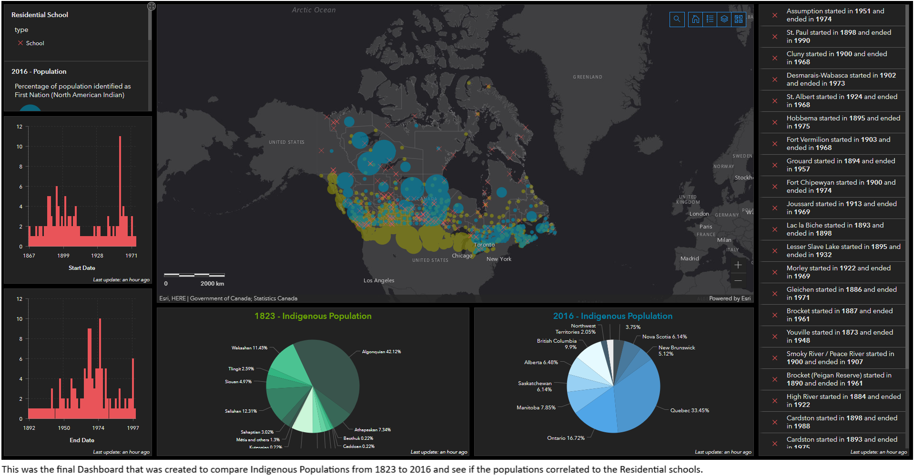 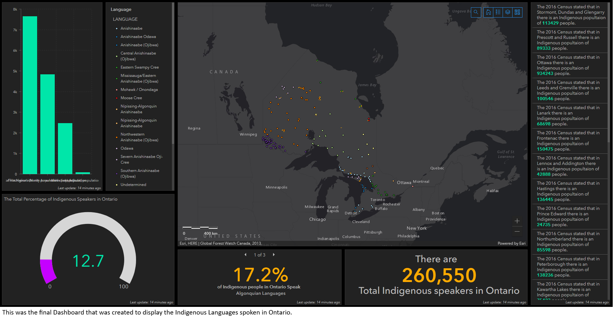Limitations we found
There were a few drawbacks we faced when using ArcGIS Dashboards. The data had to be pre-processed and configured separately before it could be imported into ArcGIS Dashboards, which was a drawback we encountered. This was a drawback because we had to leave the Dashboard and make the edit in ArcGIS Online or ArcGIS Pro if we needed to make a change to the map. Another issue we ran into was the failure to function on the Dashboard simultaneously. This was a restriction that other members of the group couldn't change the Dashboard; only the Dashboard's owner could do so.
Experience Builder
We were able to view our data on a number of websites using a scrolling screen without having to use any lines of code thanks to Experience Creator. We were able to integrate all of the various components that we developed, including the Dashboards and the Configurable App, by using Experience Builder to view Indigenous data in Canada. In addition, more shape widget components were used to tell the storey of Indigenous peoples in Canada. Photos, text, menus, and buttons were among the widgets used. We made five scrolling pages in Experience Maker. Home, Population, Residential Schools, Languages, and Settlements were all included on these pages.Since there is still a shortage of and misrepresentation of Indigenous people in Canada, each of these pages was created to help people better understand Indigenous peoples in Canada.
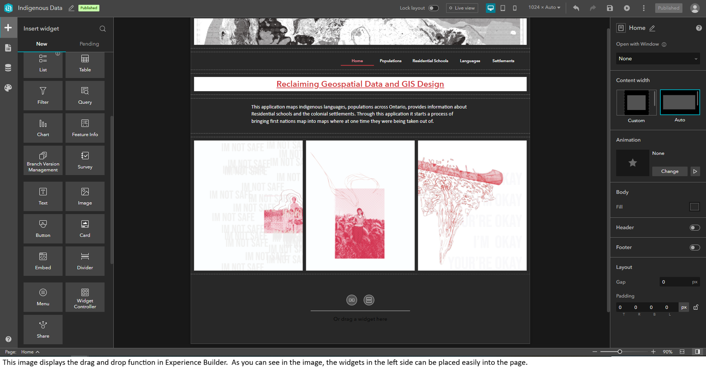 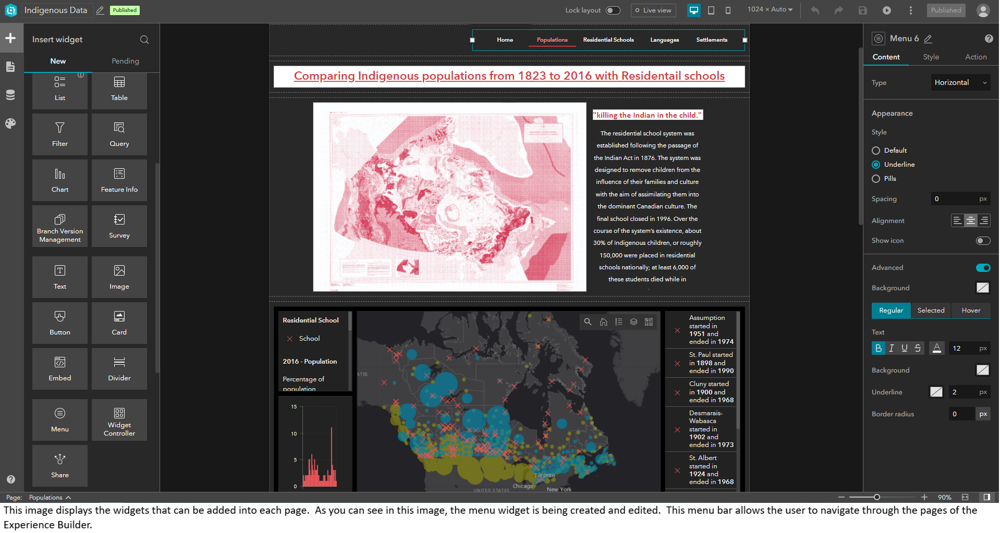Learning Outcomes
When using experience builder, we discovered a lot of new stuff. We learned how to use a variety of widgets, such as images, text, embeds, buttons, and menus, to organise them across several pages. We also learned how to use the drag and drop technique to build a visually pleasing web app without using any javascript. We were able to view Indigenous data in a user-friendly and visually appealing manner thanks to the use of Experience Builder.
Limitations we found
The ability to share with formed groups is a significant limitation we discovered while using Experience Builder and all Ersi products. This method was made even more complex than it should have been due to the inability to share editor responsibility. Another weakness we discovered was scrolling pages; after finishing all of our templates, we learned that you can not just make a page scrollable; you had to start with the correct layout. As a result, we had to start from scratch with scroll pages, where we discovered that these layouts have grids that must be adhered to, making the design process even more difficult. Finally, we were unable to solve the challenge of fitting dashboards into various screen sizes; it would have been beneficial to be able to extract bits and pieces of the dashboard and architecture from there rather than making it crammed into a small, unreadable rectangle.
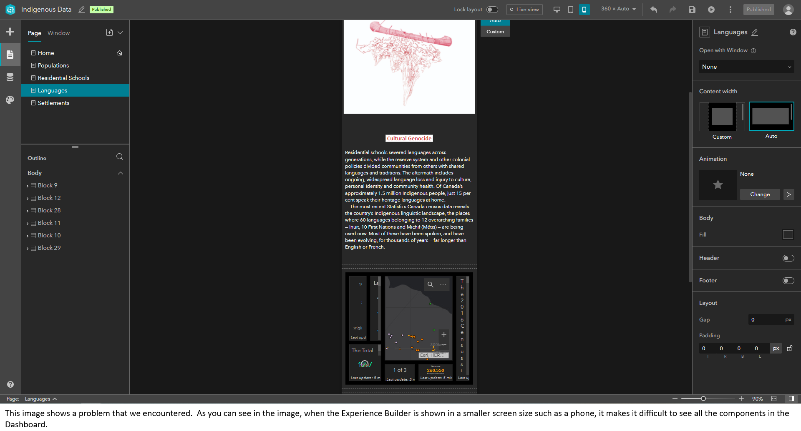 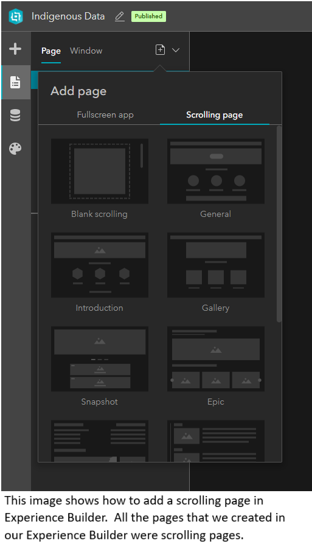Configurable Apps
Using the “Compare” Configurable App we were able to create a side- by- side comparison of twos maps that we created in MyScene. We used MyScene because it displayed our data on a 3D globe. We used the Compare Configurable App because it allowed us to compare the Indigenous people and European Settlements in Canada in the years 1630 and 1740.
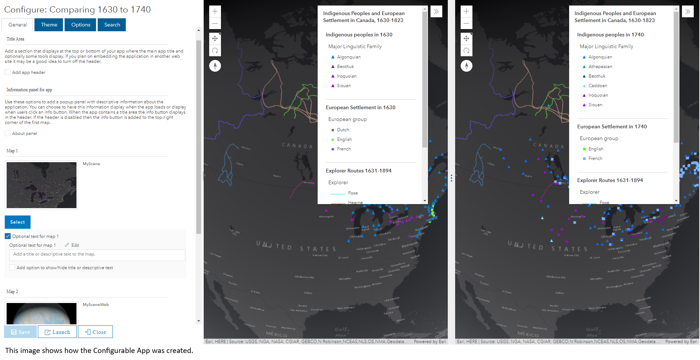Learning Outcomes
When using configurable apps, we learned how to incorporates maps that were created in MyScene. Using a Configurable App for these maps we created allowed us to display our data in a more affective and interactive way.
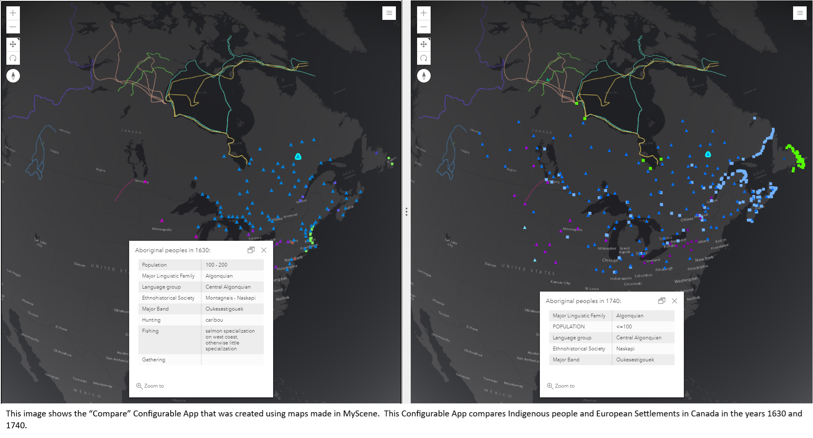Limitations we found
We didn't run into any limitations when dealing with this app with our data, and we considered it to be very easy to work with; nevertheless, I'm sure we would have hit some roadblocks if we were working with a more difficult data collection and idea.
Geocortex Item Manager
Attempted to use this application to separate a map from a Dashboard and placed it on its own page.
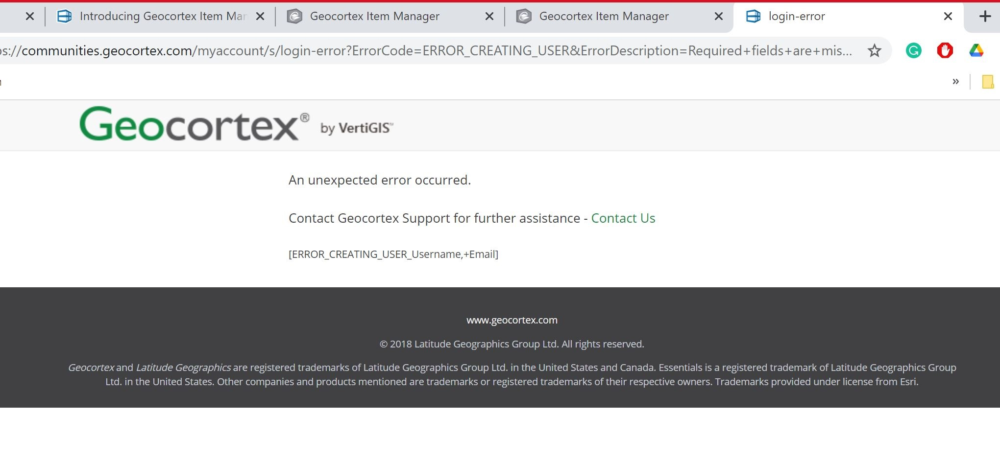Learning Outcomes
Could not get it to work, had extreme troubles signing in to the Manager